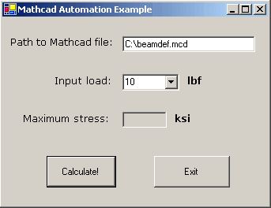

Automation Example: Visual Basic Form |
It is useful to build a "front end" to a Mathcad worksheet if non-Mathcad users are required to enter values and run calculations in the sheet, without needing to manipulate the equations. In this example, we build a VB form application that allows the user to select a Mathcad worksheet, input a single variable from a selected set, and returns the results of the worksheet back to the form using Automation. The finished application will look like this:

This example was developed using Microsoft's Visual Studio .NET. You will want to load the Mathcad Automation classes into your Project so that they show up in autofill as you type. Create a new VB Windows Application Project in Visual Studio. Choose Project > Add Reference, and then, from the COM tab, choose Mathcad Automation 1.0 Type Library.
The application interface in this example was built using the Form Designer that opens when you create a new VB Windows app. When starting from scratch, place and name the appropriate input and output fields, then double-click on any form field to edit the code. Add all of the Automation classes and other control code that make the buttons interact with Mathcad.
There are some important techniques you should use when coding a VB application to control Mathcad.
This example code, as well as the project in Visual Studio, is located in the qsheet/samples/vbasic/beamdef folder in your Mathcad install directory.
Public Class Form1
Inherits System.Windows.Forms.Form
'Dimension Objects using Intellisense
Dim MC As Mathcad.Application
Dim WK As Mathcad.Worksheets
Dim WS As Mathcad.Worksheet
#Region " Windows Form Designer generated code "
[code snipped here for brevity - this is autogenerated by Visual Studio]
#End Region
Private Sub ExitButton(ByVal sender As System.Object, ByVal e As System.EventArgs) Handles ExitButton.Click
'The Cleanup subroutine (see below) closes the application objects in the
'.NET Environment and releases the memory taken up by the Mathcad executable
'Cleanup() is called only if a process was started, and only on exiting the application
If IsNothing(MC) = False Then
Cleanup()
End If
End Sub
Private Sub CalculateButton(ByVal sender As System.Object, ByVal e As System.EventArgs) Handles CalculateButton.Click
'Dimension the force and file path variables used in the script
Dim Load As Integer
Dim Path As String
'Extract the path to the Mathcad file from the first text box (MathcadPath)
Path = MathcadPath.Text
'Create the Mathcad application object if one does not already exist
If IsNothing(MC) = True Then
MC = CreateObject("Mathcad.Application")
'Open the Mathcad sheet found at the specified path. If the sheet is not found,
'trap the error and return a message stating that it could not be found. Allow
'the user to update the path by returning focus to the App.
Err.Number = 0
On Error Resume Next
WK = MC.Worksheets
WS = WK.Open(Path)
If Err.Number <> 0 Then
MsgBox("File not found!")
Exit Sub
End If
On Error GoTo 0
End If
'Assign the input value from the combobox (InputLoad) to the variable Load
Load = InputLoad.SelectedItem
'Note that Load is currently cast as an integer.
'Pass Load to the Mathcad sheet where it is bound to a Mathcad variable called F
WS.SetValue("F", Load)
'Extract the variable Smax from the Mathcad sheet, treat it as a string, and place
'it in the third text box (MaxStress), now enabled on the form
MaxStress.Enabled = True
MaxStress.Text = WS.GetValue("Smax").AsString
End Sub
Sub Cleanup()
'Close the Mathcad application running in the background and do not prompt to save
'changes
WS.Close(Mathcad.MCSaveOption.mcDiscardChanges)
System.Runtime.InteropServices.Marshal.ReleaseComObject(WK)
System.Runtime.InteropServices.Marshal.ReleaseComObject(WS)
System.Runtime.InteropServices.Marshal.ReleaseComObject(MC)
End Sub
Private Sub Form1_Load(ByVal sender As System.Object, ByVal e As System.EventArgs) Handles MyBase.Load
'Populate the combobox with the desired loads available to the user
InputLoad.Items.Add("10")
InputLoad.Items.Add("15")
InputLoad.Items.Add("20")
InputLoad.Items.Add("25")
InputLoad.Items.Add("30")
'The values of items could also be calculated, based on the index, or
'this could be a free entry text box, requiring error checking and
'type conversion.
'ComboBox defaults to the first item on the list, 10
'Units are added in the Mathcad worksheet - they cannot be passed here
'The combobox defaults to its first entry
InputLoad.SelectedIndex = 0
End Sub
End Class